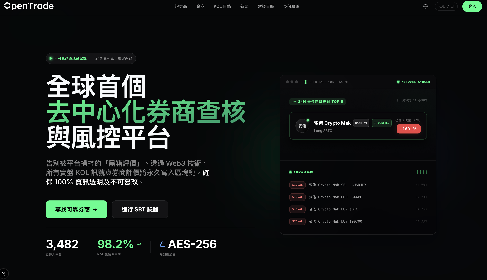
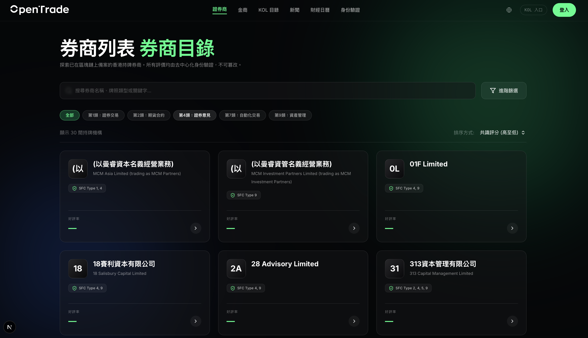
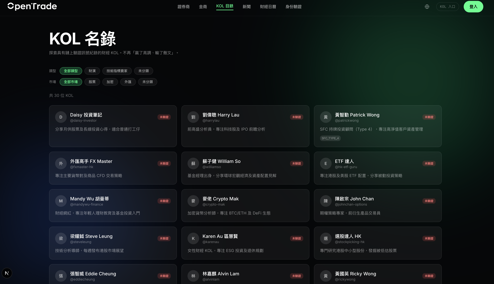
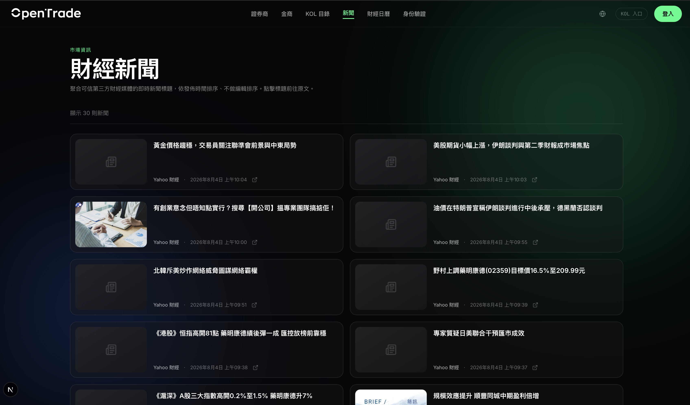
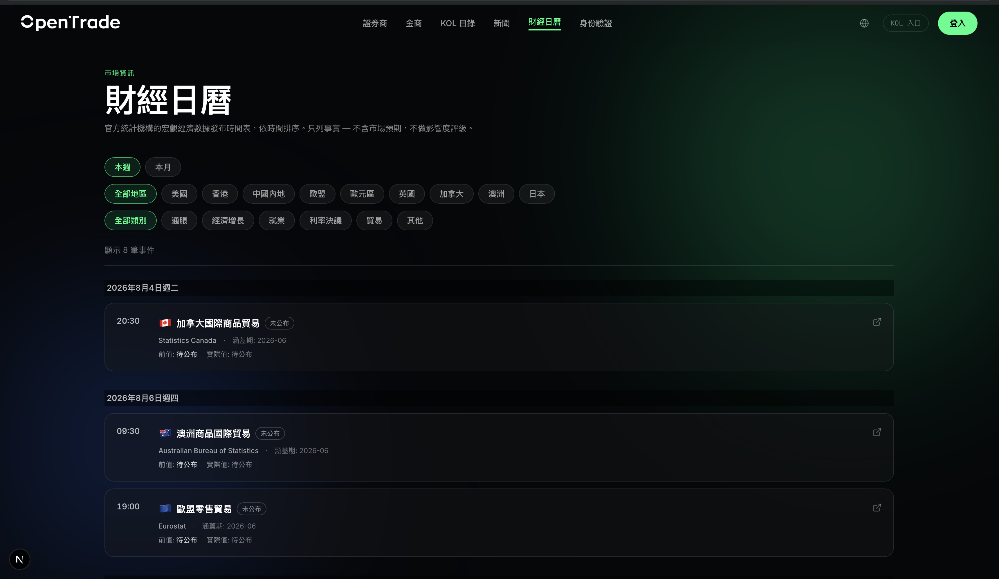
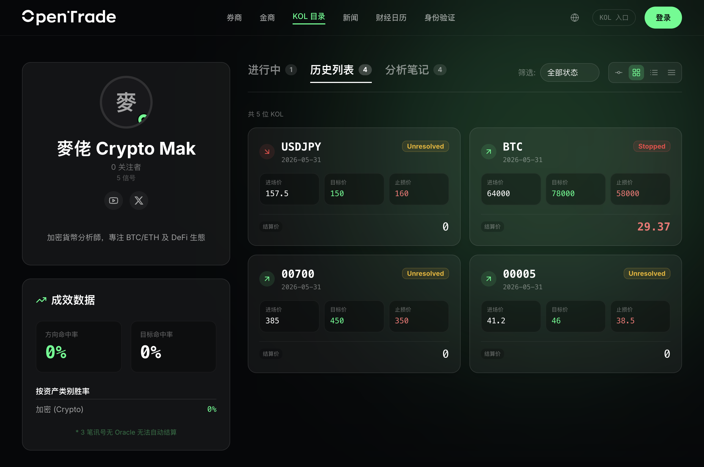

平台无权删除、无权篡改、无人能用钱洗白。
用区块链的不可篡改特性，对 WikiFX 式的 Web2.0 评分平台进行降维打击。
金融服务界的 OpenRice + Glassdoor，
但评论一旦上链，连我们自己都改不了。
我们不是「另一个外汇天眼」——我们是它无法跟进的 Web3 维度。
以外汇天眼（WikiFX）为代表，行业普遍存在结构性不公。
商家付费后，平台「协助处理」负面留言。
广告位直接影响搜索结果与评分显示。
投诉未经核实就多语公开，目的是逼商家付费「处理」。
平台同时是评分方、广告收益方、仲裁方。
投资者拿不到完整、不可篡改的历史业绩。
香港证监会（SFC）管合规与牌照，但不管：
不靠承诺、不靠平台良心——公正由密码学与去中心化机制强制执行。
评论一旦写入区块链，就永久留存。任何人——包括平台自己——都无法删除或修改，最多只能加注说明。
用户先取得一枚不可转让的「链上身份凭证」，并可用隐私技术证明自己是真实客户，而不必暴露账户余额。
有争议时，由系统随机抽选的高信誉用户组成陪审团投票裁决，双方对等提交证据，平台无权干预结果。
业务红线：永不实作「平台可删除评论」或「商户付费影响排序」的功能——这是项目存在的根本理由。
让投资者
敢相信评论、
找得到真相。
技术保证，不靠承诺。
规则、合约、数据公开可查。
链上数据任何人都改不了。
陪审团、身份、自证喊单。
散户登录 → 找券商 → 写评论 → 永久上链不可改。支持繁中/简中/英文三语。
已完成KOL 发出买/卖/持有信号即刻上链，系统按真实市场价格自动计算胜率。
已完成香港持牌券商 + 香港黄金交易所（HKGX）金商，已预先建档，非空白页。
已完成发布前自动挡粗口、人身攻击、引流广告、违法与起底——但负评用语一律放行。
已完成商户可认领专页、公开回应评论——但无法删除任何一条评论。
已完成中立聚合第三方财经标题与官方经济数据发布，严格按时间排序、不做解读、附免责。
已完成




商户后台、评论提交、投诉受理、发布前审核、身份验证…… 均已实作完成，可现场演示。

每一次喊单都带有进场价、目标价、止损与不可篡改的链上时间戳；胜率由系统客观计算，「赢了高调、输了删文」从此行不通。
这是对 WikiFX 降维打击、也是对投资人/评审讲故事最强的一张牌：平台无权决定谁对谁错。
投诉「前半段」（提交 + 后台核实 / 驳回）已完成；接下来的「仲裁裁决」是最关键、也最花时间的一环（约 4–6 周），完成后就是我们对 WikiFX 最强的差异化。
| 维度 | WikiFX（外汇天眼） | OpenTrade |
|---|---|---|
| 技术基础 | 中心化（平台说了算） | 去中心化（区块链背书） |
| 评论能否被删 | 平台可删除 | 永久保存，不可删 |
| 评论真实性 | 平台单方审核 | 链上身份验证 + 陪审团仲裁 |
| 财演战绩 | 无纪录 | 喊单历史永久锁定，无法删改 |
| 争议处理 | 平台单方决定 | 去中心化陪审团裁决 |
| 商业模式 | 商家付费（被指影响公正） | 工具订阅费，不影响评论 |
| 法律风险 | 多次被指诽谤诉讼 | 平台不发表意见，只呈现事实 |
持牌券商（第 1/2 类）· 财经 KOL / 财演 · 技术指标卖家 · 金商（HKGX 行员）。
香港保险 / 强积金 / 信托 · 台湾、新加坡券商 · 全球外汇经纪商（正面对标 WikiFX）。
加密货币交易所评论 · 银行服务评论 · 面向机构的数据订阅。
四类核心用户：散户（信任工具）· 券商（公平评论场）· KOL（可验证品牌资产）· 金商（体验评论）。
散户用最熟悉的方式（社交帐号一键登录），完全不必懂区块链；而「该公开的」永久上链、「属于隐私的」加密保管。
用户用 Google / 邮箱等社交帐号登录即可写评论、看战绩，背后自动帮你处理所有区块链细节，零门槛。
评论、KOL 喊单、陪审裁决、身份凭证——这些需要「谁都改不了」的内容，永久写入区块链公开可查。
个人身份、账户余额等敏感资料，绝不上链，改用加密方式在云端保管，符合香港个资法规。
一句话：「任何用户可能想删的资料，绝不上链；任何应该被公开监督的内容，永久上链。」
系统底层根本没有「删评论」这个功能——这是设计上的硬约束，不是政策。竞品若想跟进，等于推翻自己「靠收费删评」的商业模式。
越多不可删的真实评论 → 越可信 → 越多用户，滚成飞轮。长期累积的可信数据本身就能授权变现。
从第一天就按「未来要服务多地区、多语言、大量用户」的标准打底，避免日后推倒重来。
核心产品由小团队搭配 AI 辅助高速交付，迭代快、成本低，且每一步决策都有完整文档留痕。
商户认领专页后付费启用：链上业绩仪表板、情绪分析、API 接入。
陪审团仲裁时双方质押，平台抽 5–10%。
累积评论后，整理数据授权给保险公司、媒体、学术。
协助 SFC、消委会做投诉前置筛选。
收入与「评论公正」彻底解耦——这既是道德承诺，也是与 WikiFX 差异化的商业基础。V1 不发代币（避开 VATP 风险）。
纯技术服务商，不发表意见、不撮合交易——避开第 4 类「提供意见」牌照。所有 UI 附免责声明。
初期使用「积分」系统，第一版不发行任何代币，避开香港虚拟资产平台（VATP）监管，待政策明朗再评估。
个人敏感资料以加密方式处理，原始资料不上链、不长期保存；月结单等证明验证完即销毁。
规划中：退休 SFC 高层作为董事，强化合规定位与行业信任。
本轮沟通目标：找到认同「公正基础设施」长期价值的投资人， 一起把去中心化陪审团仲裁推到可 demo，赶上创科局申请窗口。
（具体融资金额与股权结构可依投资人需求另附条款文件。）
公正，不该是一种奢望，
而该是一种技术保证。
期待与您一起，重建金融服务评论的信任基础设施。
免责声明：OpenTrade 为纯资讯呈现的技术平台，不构成任何投资建议。本简报含前瞻性陈述，实际进度可能因资源、监管与市场情况而变动。Confidential — 仅供潜在投资人评估使用。